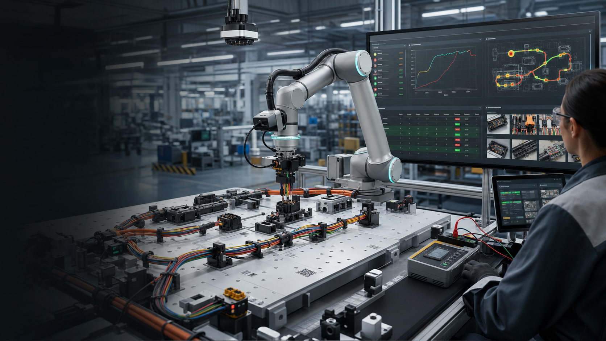

谁痛
EV OEM 质量、制造工程、SQE、EOL 测试、线束 Tier-1 和连接器供应商。
01 · Problem
车厂和 Tier-1 并不是不知道哪里出了问题。痛点是：测试失败、半插、错线、漏卡扣、返工、批次追溯、8D、客户放行和供应商责任散落在 MES、QMS、Excel、微信群、照片和工程师脑子里。
EV OEM 质量、制造工程、SQE、EOL 测试、线束 Tier-1 和连接器供应商。
一个连接器没坐实，可能变成下线返工、整批围堵、客户投诉、召回风险和发布延误。
线束柔性、分支多、车型变体多，检测证据和返工证据很难自动对齐到 connector / cavity / lot / VIN。
中国 NEV 已进入高占比、高出口、高质保压力阶段，发布速度和质量证据同时变成生死线。
02 · Why Now
这个市场不是靠概念拉动，而是被产量、返修、停线、召回和供应商协同推着走。我们要抓住的是“自动化能做一部分，但异常闭环仍然靠人肉拼证据”的空白。
03 · Core Insight
现有视觉检测、EOL 测试、MES、QMS、PLM 都在贡献碎片。HarnessLoop 的洞察是：线束异常需要一个懂线束语义的系统 of closure，而不是又一个横向工单系统。
HarnessLoop 看 `C214 / cavity 17 / terminal lot / wire ID / vehicle variant / EOL failure / rework proof`。
机器人、相机、力曲线和导通测试只是证据采集器；客户买的是更快闭环和更少逃逸。
人工接管、返工动作、复测结果和客户签核会进入 LeRobot episode，下一次边缘策略更稳。
04 · Solution
它不替代 MES、QMS 或线束设计软件。它补的是最丑但最值钱的一层：把检测、返工、复测、责任人、供应商、工程变更和客户放行绑成一条证据链。

05 · Product Workflow
第一版切口是“连接器异常闭环”，不是全自动线束工厂。我们先解决发布爬坡和 EOL 电气失败最疼的一段，再扩展到线束路由、夹扣、扎带、高压连接和供应商门户。
EOL NOK、视觉缺陷、半插力曲线、漏夹扣、错路线束或供应商 NCR 打开异常。
关联 VIN、工位、线束件号、连接器、端子批次、测试项、操作员和供应商。
HIL 模式下完成重插、补夹、复位、低压导通复测和 before/after 影像采集。
力位移曲线、视觉状态、导通表、复测记录和人工签核共同判断是否关闭。
把异常、接管和恢复片段写入 LeRobotDataset，训练下一版边缘检测和恢复策略。
06 · Market Wedge
发布爬坡期最愿意付费，因为质量团队每天都在跟停线、EOL NOK、供应商围堵和客户 audit 赛跑。HarnessLoop 用一个窄入口拿到关键数据模型，然后扩展到全项目、全工厂和供应商网络。
视觉看起来像合格，CPA/锁止可能欺骗人眼，力曲线和复测能补证据。
按 connector-cavity-wire ID 建模，把导通失败定位到可执行的返工动作。
路线偏差、clip vacancy 和扎带缺失通过 overhead vision 和返工证据关闭。
按 terminal lot、connector lot、工位时间窗和车辆范围快速定位 suspect population。
把 OEM、Tier-1、连接器供应商和工装团队放进同一个事实记录。
自动生成闭环证据包：问题、围堵、根因、纠正、复测、签核和有效性验证。
07 · Business Model
HarnessLoop 不靠“节省几个工人”讲 ROI。真正的预算来自发布质量、停线风险、EOL 复测、客户审核、供应商索赔、质保成本和召回风险控制。
7.5 万美元/工厂/项目，覆盖 1 条发布线、3 个重点连接器工位和 EOL failure feed。
18-24 万美元/site/year，按线体、车型项目、活跃线束族和供应商协同范围分层。
OEM 可赞助供应商网络，Tier-1 和连接器供应商按 seat / program 参与闭环。
相机、低力夹具、导通 mock、robot/HIL adapter、Qualcomm edge runtime 和实施服务单独收费。
08 · Go-To-Market
试点不做大而全集成。第一阶段建立 defect taxonomy 和当前闭环基线，第二阶段接入 EOL/视觉/扫码/返工证据，第三阶段用财务和质量团队认可的 KPI 结案。
目标缺陷 repeat PPM 下降 20-30%，目标 EOL 电气 NOK/复测率下降 15-25%。
平均诊断/返工/关闭时间下降 20-30%，超过 24 小时未关闭异常减少 50%。
95%+ 目标异常带站点、VIN/lot、证据、处置、根因、围堵责任人和复测结果。
试点价值覆盖试点费，或形成年度订阅 3 倍以上可信年化价值。
09 · Competition
我们不和 Siemens Capital、Zuken、MES、QMS、视觉检测或 Q5D 这类线束自动化公司正面硬碰。HarnessLoop 是跨系统的异常关闭层：把它们的输出变成可以签核、复盘和训练的数据资产。
强在设计和制造文档，弱在现场异常、返工证据和供应商协同闭环。
强在生产记录和 CAPA 流程，弱在线束语义、传感器证据和机器人/HIL 数据。
强在检测，弱在把检测失败转成责任、返工、复测、签核和训练样本。
强在做动作，弱在跨工位、跨供应商和跨车型的商业闭环数据模型。
10 · Moat
每一个 connector、cavity、wire、terminal、supplier、force curve、continuity result、HIL recovery 和 CAPA outcome 都让系统更懂车厂线束质量的真实语言。
连接器、端子、线束分支、车型变体、工位、供应商和测试项构成专用知识图谱。
before/after 图片、力曲线、导通表、HIL 片段和签核记录组成可审计数据集。
每次人工修复都不是丢失的现场经验，而是下一轮 LeRobot 训练和边缘 profile 的样本。
从单站点扩到 OEM/Tier-1/连接器供应商，网络越大，重复问题越早被发现。
11 · Architecture
比赛版本使用安全低压桌面线束板，不接触真实 EV 高压。Qualcomm edge 运行视觉、力曲线分类和证据打包；LeRobot 负责 HIL 片段和数据集；云 GPU 负责训练，MES/QMS/PLM 通过 adapter 连接。
overhead camera、wrist camera、wrist F/T、触觉指尖、夹具限位和低压导通测试。
QCS6490/RB3 运行 connector detector、route verifier、force signature classifier 和 evidence packer。
LeRobot 记录 policy、pause、human takeover、recovery、return-to-policy 和质量结果。
接入 MES/QMS/EOL/PLM/供应商门户，但不替代原系统 of record。
异常 episode 进入中国云或海外云训练，导出固定模型回到 Qualcomm edge profile。
12 · Competition Demo
桌面 demo 用低力线束板、彩色线、JST/Molex 类低压连接器、3D 打印夹具、相机、力传感、MCU 导通测试和小机械臂即可。重点是证据链，而不是汽车级认证。
故意放入错路线束或半插连接器，EOL mock 和视觉同时打开异常。
机器人尝试低速插接或复位，力曲线异常时停止并请求 HIL 接管。
人工遥操作修复路线、重插连接器或补夹扣，LeRobot 记录 recovery episode。
复拍照片、检查 latch/route、导通测试通过，系统生成 before/after 和曲线证据。
异常卡片变成 closed，自动生成 8D/CAPA draft 和下一轮训练样本。
13 · Why Qualcomm
线束异常闭环是 Qualcomm 机器人和汽车生态的交叉点：端侧多传感融合、低延迟推理、工业数据本地化、SDV 发布质量和中国车厂供应链都在这里汇合。
相机、力曲线、触觉、导通测试和异常证据在工位本地融合，不适合全部上云。
Qualcomm 已在智能座舱、ADAS 和 SDV 中进入车厂；HarnessLoop 把价值延伸到制造质量。
中国 NEV 产量、供应链深度、数据本地化和快速发布周期，让本地 edge-first 方案更有说服力。
比赛能展示 AI Hub、QNN/QAIRT、LeRobot HIL、ROS 2 和云训练如何变成商业产品。
14 · Ask
我们需要证明商业逻辑、数据闭环和 Qualcomm edge 价值：在低风险桌面工位里把一个物理异常从发现、修复、复测、签核到训练回流完整演示出来。
RB3 Gen 2 / QCS6490 类开发板、低力机械臂、双相机、F/T 或 load cell、MCU 导通板和 E-stop。
3D 打印线束板、彩色线束、低压连接器、clip/tie 点、pogo pin 或 JST/Molex 类测试座。
ROS 2 topic、LeRobot adapter、异常状态机、evidence packet、AI Hub/QNN profile 和 dashboard。
不声称高压 EV 验证、ASIL、任意连接器全自动插接、零人工关闭或生产节拍提升已验证。
Claims & Sources
页面使用公开资料作为方向性证据。市场报告类数字只做趋势参考；比赛 demo 明确限定在低压桌面夹具、人工可接管和 operator approval 的边界内。